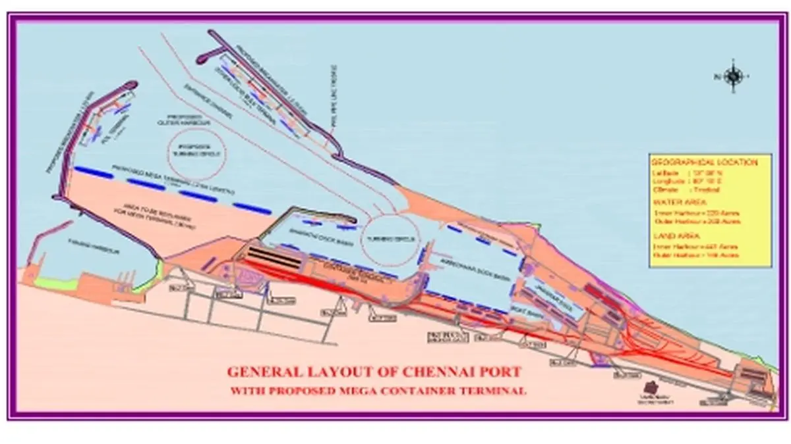

This AI system learns from how the port works every day. Instead of using fixed rules made by people, it figures out by itself what is going well and what is causing delays.
It uses a smart method called meta-learning, which helps it get better at learning over time. Before making any changes in real life, it tests new ideas in a virtual copy of the port called a digital twin.
The system tries different workflows in this virtual port and picks the best one through automatic testing. This way, the port always uses the most efficient ways to handle cargo, schedule ships, and use equipment.
It does all this on its own, improving continuously without a person needing to reprogram it. This helps the port run faster and smoother in real time.